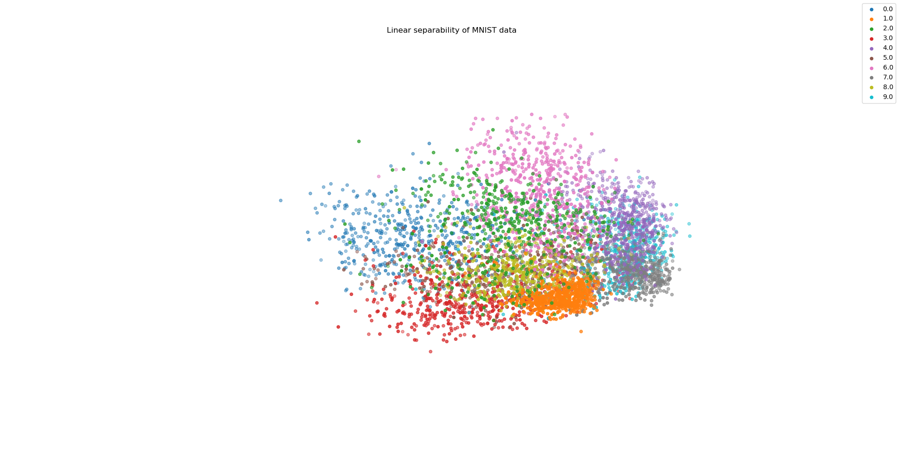

Entry 38¶
Linear separability of data, e. g. MNIST¶
Tim Graute
In a world where neural networks are growing in popularity, it is central to know how well data can be separated linearly; therefore, the code below identifies vectors that enable an - under certain aspects ideal - distinguishment among classes of a dataset. Those vectors, that are orthonormal above all, are taken as the coordinate axes in a 2D or 3D representation. Data is then projected onto them as visualized for the MNIST dataset.
Concerning the vectors: Any data point needs to represented in the Euclidean space R^k. In a first step, all centers of n classes are calculated and the distance vectors between any two of them. The distance vectors span a subspace in R^k of dimensionality not higher than n-1.
In a second step, a matrix M of size k^2 is constructed by summation over any d*d^T (outer product of distance vector d with itself, d^T denominates the transposition of d) for all distance vectors. Now, the target is to find a normalized view direction v in R^k so that v^T*M*v is maximized ( v^T*M*v is the sum over all v^T*(d*d^T)*v = (v^T*d)*(d^T*v) = ||v^T*d||^2, in other words the sum over all squared lengths of projections of d on v ). Such a vector v is a very suitable coordinate axis since it may separate the data in a broad range. As the outer product d*d^T is Hermitian for any distance vector d, M is Hermitian too. Hence, there is an orthonormal decomposition of R^k out of eigenvectors of M (espcially, eigenvalues are real). Therefore, the spectral decomposition of M shows v^T * M * v <= e ||v||^2 for any vector v in R^k; here, e denotes the largest eigenvalue of M. This inequality states equality for nonzero v in R^k only if v belongs to the eigenspace with the largest eigenvalue.
In a more general setting, it is optimal to choose eigenvectors of M with maximum eigenvalues for the coordinate axes of a representation.
Indeed, the algorithm works quite efficient on the MNIST dataset with k = 784 which is partly due to the Hermitian structure of M. The visualization in two and foremost three dimensions hints that MNIST truly can be separated in a spatial way.
Code and data: 1